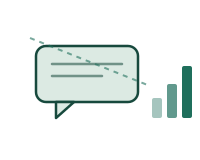
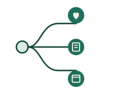
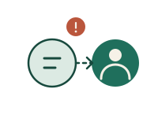

A Trusted WhatsApp Companion for First-Line Emotional Support
MindCare AI meets people inside WhatsApp — no download, no waiting room — with supportive, non-diagnostic conversation, grounded coping guidance, and an immediate path to a trained human whenever a conversation needs one.
Interactive preview of the conversation style — not a live connection to MindCare AI.
"People often need support the moment a feeling gets hard to carry — not after a two-week waitlist, or the courage to say it out loud to someone new."
Every message travels the same careful path
Before a reply is ever sent, each message is screened, routed, and checked — so support stays consistent whether someone is journaling at midnight or in real distress.
Consent, then memory
Ongoing conversation only begins once consent is captured and stored. Context is kept bounded and configurable — never open-ended data hoarding.

Safety screening on every message
A dedicated risk layer classifies each inbound message as LOW, MEDIUM, HIGH, or UNKNOWN/REVIEW — before anything else happens. If the classifier fails, it fails closed into REVIEW, never LOW.

Routed to the right kind of help
Emotional support, coping techniques, psychoeducation, journaling prompts, appointment requests, or a plain question — intent routing sends each message down the right path, using only approved, reviewed knowledge.

Escalation when it counts
HIGH or REVIEW conversations create a human escalation case immediately, with the decisions, model version, and policy version logged for audit — without hoarding raw sensitive content.
Three people rely on this to work correctly
Each side of the product sees a different slice — a conversation, a queue, or a dashboard — but all three share one safety model underneath.
Someone who needs to talk, right now
Accessible emotional support, reflection prompts, coping guidance, and grounded information — reachable the moment it's needed, without booking anything first.
The person a conversation escalates to
Prioritized escalations arrive with conversation context and risk signals already attached, plus the ability to take over a conversation directly.
The person accountable for the whole system
Aggregate metrics, a safety audit trail, configuration control, and access management — the view needed to prove the system is behaving as designed.
Safety before engagement — not a slogan, a set of hard limits
MindCare AI is built around one governing rule: it supports, it never diagnoses. Everything below is enforced, tested, and versioned.
The system must not diagnose.
The system must not prescribe or alter medication.
A risk classifier failure fails closed into REVIEW — never LOW.
Safety policies are versioned, and safety regression tests are release-blocking.
Every human escalation is observable and auditable — nothing disappears silently.
Every message is encrypted in transit and at rest — a safety boundary, not just a compliance checkbox, since the honesty this product depends on requires the conversation to actually stay private.
Crisis protocols and response content are reviewed by licensed clinical advisors before release, not just by the engineering team.
The moment a conversation is classified HIGH or REVIEW, the normal flow — including any in-progress booking — freezes, and the approved crisis and human-escalation protocol takes over instead.
Guardrails. Output is validated against diagnosis, medication advice, unsafe content, unsupported claims, dependency language, privacy violations, and crisis mishandling before it's sent.
Your conversation is treated like the sensitive thing it is
Mental health data deserves the same handling as any other health information — encrypted, access-controlled, and never used for anything you haven't agreed to.
HIPAA-aligned handling
Health-related conversation data is handled under HIPAA-aligned safeguards — access controls, audit logging, and minimum-necessary use — for deployments touching U.S. patient data.
Encrypted in transit and at rest
Every message is encrypted end-to-end in transit and encrypted at rest in storage — nobody outside the escalation path can read a conversation in the clear.
DPDP Act aligned
For deployments in India, data collection, storage, and consent flows are built to align with the Digital Personal Data Protection Act.
Your data, your control
Bounded memory, visible consent, and the ability to request deletion — nothing is retained longer than the product needs it to provide continuity of care.
Asking for a therapist works like asking a knowledgeable friend
When someone explicitly asks to find a nearby therapist, MindCare AI can search an approved provider directory and, where a scheduling integration exists, check real availability.
The AI can schedule administratively, but never determines clinical suitability, diagnosis, or urgency from symptoms alone.
Provider data always comes from an approved directory — therapists, credentials, availability, prices, and reviews are never fabricated.
Without a live booking integration, a request becomes a callback task — MindCare AI never claims an appointment exists when it doesn't.
Building in the right order
The safety and conversation core ships first. Everything that widens reach or adds convenience comes after that foundation is proven.
The safety-first core
- WhatsApp webhook FastAPI service
- Risk classifier
- LangGraph orchestration
- RAG abstraction
- Guardrail policy engine
- PostgreSQL persistence
- Human escalation record
- DeepEval test suite
Reach & oversight
- Counsellor dashboard
- Appointment booking
- Multilingual support
- Voice notes
- Tenant administration
- Analytics
Clinical readiness
- Validated clinical workflows*
- Formal safety case
- External red-team program
- Jurisdiction-specific compliance
*Only after qualified clinical and regulatory review.
Before you start a conversation
Is MindCare AI a replacement for therapy?
No. It supports, it never diagnoses, prescribes, or replaces licensed treatment. Think of it as a first-line companion and a bridge to a human therapist — not a substitute for one.
Who can actually read my messages?
Conversations are encrypted in transit and at rest. A human only sees a conversation when it's escalated — HIGH or REVIEW risk, or if you ask to speak with a person directly — and that access is logged.
Is it free to use?
MindCare AI is built to remove cost as a barrier to a first conversation. Any paid tiers or organizational plans would be scoped and communicated clearly before you'd ever be asked to pay.
What happens if I'm in a real crisis?
The moment a message is classified HIGH or REVIEW, the normal conversation flow stops and the crisis protocol takes over immediately, with a human escalation created in parallel. For any immediate, life-threatening emergency, please contact your local emergency services directly — MindCare AI is not built to replace them.
What languages does it support?
English today. Multilingual support is on the Phase 2 roadmap, alongside voice notes.
You don't have to carry it alone.
Start a conversation on WhatsApp — it's free to begin, private, and there right now, whenever you're ready.